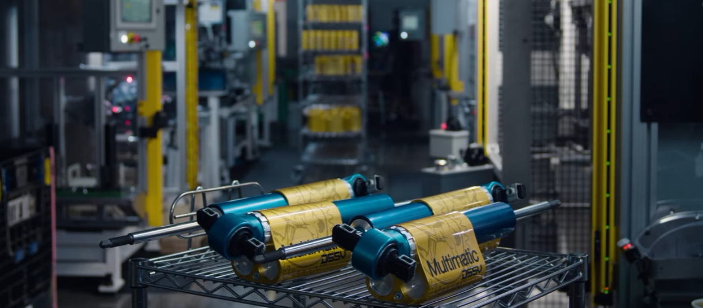

Modelled, simulated, then proven on track.
Resume (PDF)Quin Hutton
Where I've worked

Resume
The resume will appear here once the file is in place. Save it into the project
folder as resume.pdf and reload. Nothing else needs changing.
Featured work
Three out of nineteen models built for the car. Each one is on the model library page, with the plots it produced.


9 DOF corner balance model
Suspension and yaw plane solved together, so load transfer comes out of the states and every tyre is asked about its own normal load. The newest and the largest of the set.


Tyre fitting and selection
Raw test data binned, smoothed and fitted to a TIR file, then thirteen candidates ranked on a weighted matrix, with a distance metric to place the ones that were never tested.

Ride and damping study
A quarter-car sweep that puts comfort and contact patch control on the same axis, so the point where more damping stops paying is a number rather than an opinion.
Get in touch